管理会計 CO（Controlling）
管理会計 · 原価センタ · 原価要素 · 作業タイプ · 配賦・按分 · 内部指図
1. 本モジュールのガイド
CO のメインラインは「管理会計領域 → 原価センタ → 原価要素／作業タイプ → 期末按分 → 内部指図」です：管理会計領域を登録して会社コードを割り当てる → 原価センタグループと原価センタ（OKEON）→ 一次／二次原価要素（KA01 / KA06）と原価要素グループ → 作業タイプ（KL01）と作業出力価格（KP26）→ 管理会計伝票の番号範囲 → 原価センタレポート、再転記（KB61）→ 統計キー数値（KK01）と統計キー数値の数量（KB31N）→ 配賦サイクル（賃料）と按分サイクル（電気料金）→ 内部指図：指図タイプと番号範囲、決済パラメータと割当構造、指図の登録（KO04）、費用請求書、決済（KO88）と決済結果。
教材シナリオでは「管理部の賃料を面積に応じて各原価センタへ配賦する」「電気料金を統計キー数値で按分する」「内部指図で費用を集計してから決済する」という 3 つを一連の流れとして解説しており、CO の期末決算を理解するうえで最も分かりやすい道筋です。
- 管理会計領域と会社コードの割当（
OX19。FI の会社コードとの整合に注意） - 原価要素（一次 = FI 勘定に対応、二次 = 按分／決済など CO 内部だけで流れる）
- 配賦（
配賦サイクル、統計キー数値／トレース要因を使用）と按分（按分サイクル）の違い - 内部指図：タイプ → 決済プロファイル → 配賦構造 → 登録 → 費用 → 決済
KO88
ドキュメントに出てくる T-code：OX19 OKEON KA01 KA06 KL01 KP26 FB60 FB50 KB61 KK01 KB31N KO04 KO88（詳細は T-code / IMG パス早見表 を参照）
2. タスク目次（34 件）
そのうち 30 件のタスクで、原教材ドキュメントの IMG 設定メニューパスが示されています；IMG 設定 のマークが付いているのはカスタマイジング（設定）タスク、業務処理 と付いているのは日常業務の操作タスクです。表示がないタスクは原文でも明示されておらず、タスク名からご自身で判断してください（一般に「～の定義／～パラメータのメンテナンス」＝ IMG 設定、「伝票・指図・請求書の登録／入力／照会」＝業務処理）。
| No. | タスク | IMG/業務 | ドキュメント内の T-code | 画面 | 手順ステップ |
|---|---|---|---|---|---|
| タスク 01 | 管理会計領域を登録する | — | — | 4 | 4 |
| タスク 02 | 会社コードを管理会計領域に割り当てる | IMG設定（カスタマイズ） | OX19 | 4 | 4 |
| タスク 03 | 管理会計領域をメンテナンス | IMG設定（カスタマイズ） | — | 9 | 6 |
| タスク 04 | 原価センタグループと原価センタをメンテナンス | 業務処理（トランザクション） | OKEON | 20 | 9 |
| タスク 05 | 一次原価要素を新規作成 | — | KA01 | 30 | 8 |
| タスク 06 | 二次原価要素を作成 | — | KA06 | 9 | 5 |
| タスク 07 | 原価要素グループを新規作成 | — | — | 6 | 4 |
| タスク 08 | 一次原価要素を変更 | — | — | 0 | 0 |
| タスク 09 | — | — | 4 | 1 | |
| タスク 10 | 作業タイプを新規作成 | — | KL01 | 6 | 2 |
| タスク 11 | 作業タイプグループを新規作成 | — | — | 3 | 2 |
| タスク 12 | 作業出力価格を設定する | — | KP26 | 7 | 7 |
| タスク 13 | 管理会計伝票の番号範囲をメンテナンス | IMG設定（カスタマイズ） | — | 6 | 5 |
| タスク 14 | 費用の仕入先請求書を入力 | — | FB60 | 3 | 2 |
| タスク 15 | 一般費用の請求書を入力 | — | FB50 | 4 | 4 |
| タスク 16 | 原価センタレポートを実行 | — | — | 3 | 2 |
| タスク 17 | 原価センタデータの再転記 | — | KB61 | 6 | 5 |
| タスク 18 | 統計キー数値を新規作成 | — | KK01 | 5 | 2 |
| タスク 19 | 統計キー数値の数量を入力 | — | KB31N | 3 | 3 |
| タスク 20 | 配賦サイクルを定義 | — | — | 6 | 5 |
| タスク 21 | 配賦 | — | — | 3 | 2 |
| タスク 22 | 原価センタに配賦された賃料を照会 | — | — | 4 | 3 |
| タスク 23 | 按分サイクルを定義 | — | — | 8 | 5 |
| タスク 24 | 按分 | — | — | 4 | 1 |
| タスク 25 | 「実行」をクリック | — | — | 1 | 1 |
| タスク 26 | 原価センタに按分された電気料金を照会 | — | — | 4 | 2 |
| タスク 27 | 内部指図タイプを登録し、番号範囲をメンテナンスします | — | — | 10 | 4 |
| タスク 28 | 内部指図の決済プロファイルをメンテナンス | — | — | 4 | 4 |
| タスク 29 | 内部指図決済の配賦構造をメンテナンス | — | — | 6 | 6 |
| タスク 30 | 決済伝票の番号範囲をメンテナンス | — | — | 3 | 2 |
| タスク 31 | 内部指図を登録 | — | KO04 | 10 | 7 |
| タスク 32 | 内部指図の費用請求書を入力 | — | FB50 | 4 | 4 |
| タスク 33 | 内部指図の決済 | — | KO88 | 3 | 2 |
| タスク 34 | 内部指図の決済結果を照会する | — | — | 4 | 3 |
3. 手順（タスクごと）
管理会計領域を登録する
4 画面 / 4 ステップ原語（中国語）
企业结构 → 定义 → 控制 → 维护成本控制范围-
エンタープライズ構造－定義－管理会計－管理会計領域のメンテナンス
原文
企业结构－定义－控制－维护成本控制范围
画面 310image314.png · 398×370 -
選択ダイアログが表示されるので、「管理会計領域のメンテナンス」を選択します
原文
弹出选择框 选择维护成本控制范围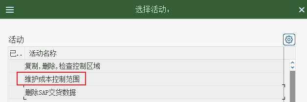
画面 311image315.png · 628×209 -
「新規エントリ」をクリックし、会社コード C999 を入力します
原文
点击新条目,录入公司代码C999
画面 312image316.png · 442×366 -
前の画面に続けて操作します（画面 313）

画面 313image317.png · 774×694
会社コードを管理会計領域に割り当てる
IMG設定（カスタマイズ）OX194 画面 / 4 ステップ原語（中国語）
企业结构 → 分配 → 控制 → 把公司代码分配给成本控制范围-
前の画面に続けて操作します（画面 314）

画面 314image318.png · 351×342 -
TCODE コード：OX19
原文
TCODE代码：OX19
画面 315image319.png · 434×242 -
C999 を選択し、「会社コード設定」をダブルクリックします
原文
选中 C999，双击公司代码设置
画面 316image320.png · 452×335 -
「新規エントリ」をクリック
原文
点击新条目
画面 317image321.png · 454×398 教材ノートC999 を管理会計領域に追加します
管理会計領域をメンテナンス
IMG設定（カスタマイズ）9 画面 / 6 ステップ原語（中国語）
控制 → 一般控制 → 组织结构 → 维护成本控制范围-
管理会計－一般管理会計－組織構造－管理会計領域のメンテナンス
原文
控制－一般控制－组织结构－维护成本控制范围
画面 318image322.png · 372×498 -
「アクティビティ選択」が表示されるので、「管理会計領域のメンテナンス」をクリックします
原文
弹出选择活动，点击维护成本控制范围
画面 319image323.png · 362×201 -
C999 をダブルクリックし、基本データをメンテナンスします
原文
双击 C999，维护基本数据
画面 320image324.png · 436×243 -
前の画面に続けて操作します（画面 321）

画面 321image325.png · 816×602 教材ノート保存後、「戻る」をクリックし、C999 を選択して「有効化コンポーネント/制御識別子」をダブルクリックします -
システムが C999 原価センタ標準階層は存在しないとメッセージを表示するので、「はい」をクリックします。
原文
系统会提示 C999 成本中心标准层次不存在，点击是。
画面 322image326.png · 665×330 -
「新規エントリ」をクリックし、開始会計年度（例：2021 年）を入力します。
原文
点击新条目，输入起始财年，比如2021年。
画面 323image329.png · 849×816 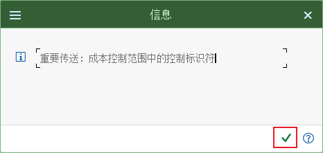
画面 324image330.png · 466×221 画面 323image329.png · 849×816 画面 324image330.png · 466×221 教材ノート会計年度は「…年から」という概念であり、今後設定が変わらなければ毎年メンテナンスする必要はありません
原価センタグループと原価センタをメンテナンス
業務処理（トランザクション）OKEON20 画面 / 9 ステップ原語（中国語）
会计核算 → 控制 → 成本中心会计 → 主数据 → 标准层次 → OKEON-更改-
会計－管理会計－原価センタ会計－マスタデータ－標準階層－OKEON-変更
原文
会计核算－控制－成本中心会计－主数据－标准层次－OKEON-更改
画面 327image331.png · 284×480 
画面 328image332.png · 361×194 -
「保存」をクリックすれば、毎回ここで管理会計領域を入力する必要がなくなります
原文
点击保存就不用每次进来输入成本控制范围了
画面 329image335.png · 946×672 
画面 330image336.png · 1174×678 画面 329image335.png · 946×672 画面 330image336.png · 1174×678 -
「保存」をクリックし、C999 を選択して、次の図のように操作します
原文
点击保存，选中C999,然后如下图操作
画面 333image337.png · 827×454 -
下位グループを選択し、次の画面へ進む
原文
选择较低组，进入如下页面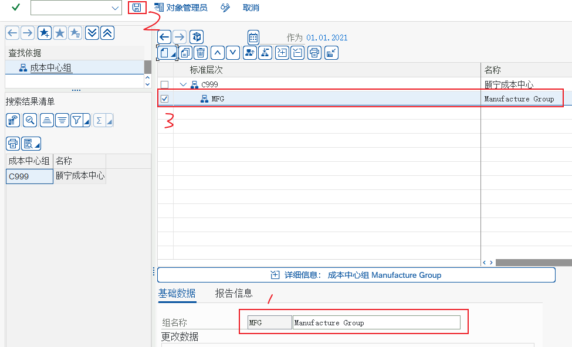
画面 334image338.png · 975×592 -
さらに本社を 1 つ登録
原文
再创建一个总部
画面 335image339.png · 953×566 -
MFG を選択し、新規原価センタを選択して次の項目を入力し、保存します。黄色の警告は無視してかまいません。
原文
选择 MFG，选择新建成本中心，输入如下字段，并保存，黄色警告，可以略过。
画面 336image342.jpeg · 1271×838 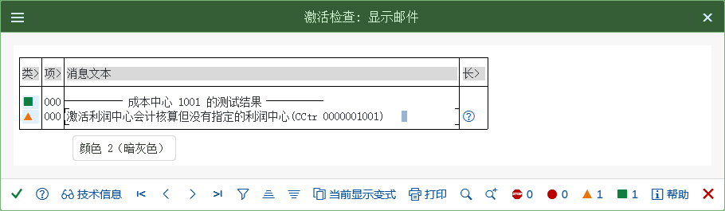
画面 337image343.png · 910×265 画面 336image342.jpeg · 1271×838 画面 337image343.png · 910×265 教材ノートその他の原価センタを登録 -
前の画面に続けて操作します（画面 340）

画面 340image344.jpeg · 1238×854 
画面 341image345.png · 938×839 -
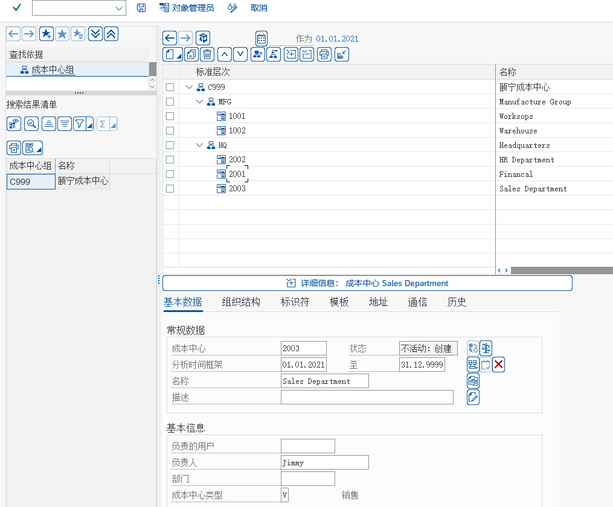
画面 342image346.png · 1015×840 
画面 343image347.png · 967×848 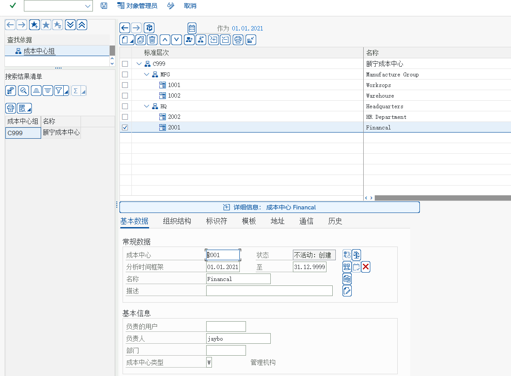
画面 344image348.png · 1155×851 -
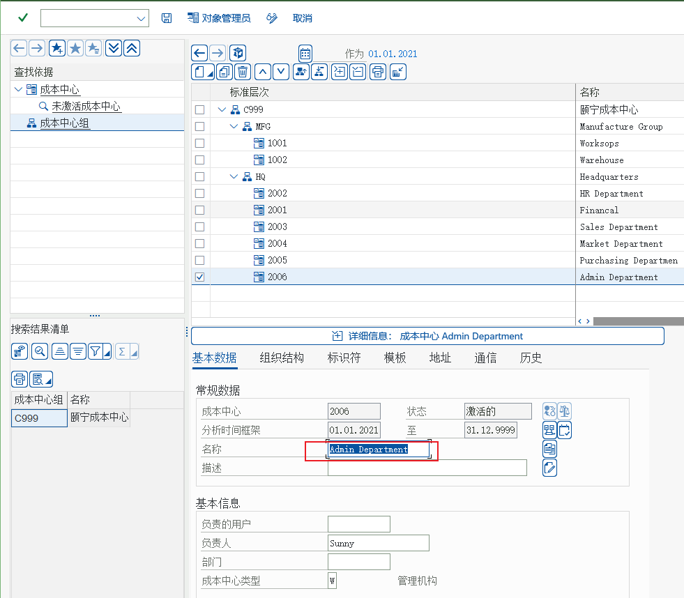
画面 345image349.png · 981×858 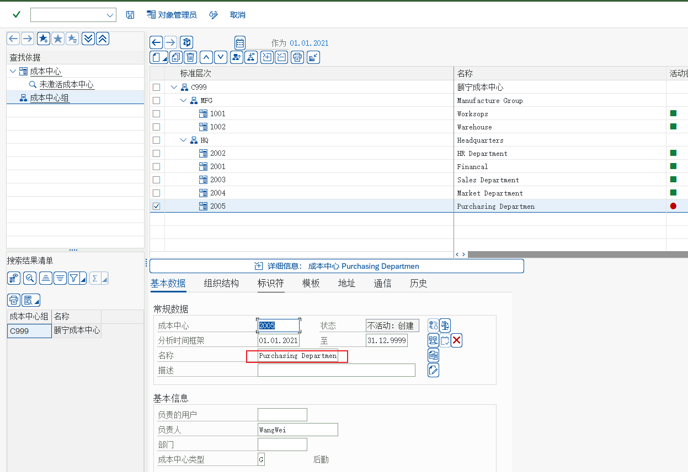
画面 346image350.png · 1247×857
一次原価要素を新規作成
KA0130 画面 / 8 ステップ原語（中国語）
会计 → 控制 → 成本中心会计 → 主数据 → 成本要素 → 单个处理 → KA01-创建初级成本-
CO は「原価要素」で原価フローを管理します。原価要素は財務会計の勘定に似ています
会計－管理会計－原価センタ会計－マスタデータ－原価要素－個別処理－KA01-一次原価要素の登録原文
CO 用“成本要素”来管理成本流，成本要素和财务会计里的科目类似
会计－控制－成本中心会计－主数据－成本要素－单个处理－KA01-创建初级成本
画面 347image352.png · 313×521 -
lu41010101

画面 348image355.png · 439×307 
画面 349image356.png · 557×523 画面 348image355.png · 439×307 画面 349image356.png · 557×523 教材ノート上記のステップを繰り返します。すべての損益勘定は一次原価要素です。41010901 製造原価－製造指図差異の原価要素カテゴリが「22 外部決済」である以外は、他のすべての一次原価要素のカテゴリは「1 一次原価／原価低減による利益」です。 -
解説： 「41010901 製造原価－製造指図差異」は製造指図の決済によって発生します。管理会計で計算した結果に対して、特殊な原価要素カテゴリ「22 外部決済」を使用します。
原文
解释“41010901 生产成本－生产订单差异”是生产订单结算产生的，是管理会计计算初结果后，使用一种特殊的成本要素类别“22 外部结算”。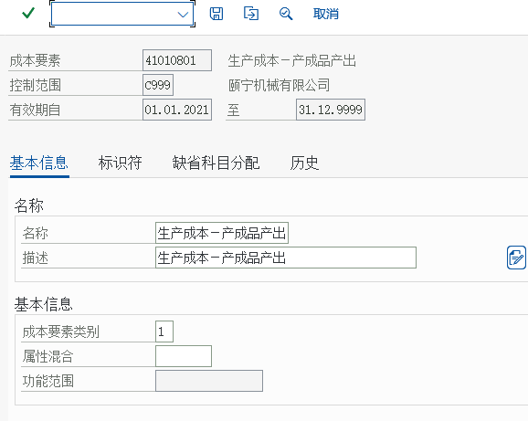
画面 352image357.png · 578×461 -

画面 353image360.png · 605×448 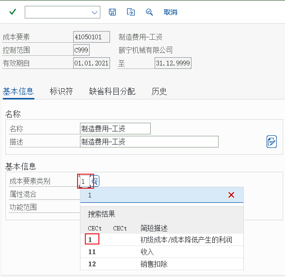
画面 354image361.png · 588×571 
画面 355image362.png · 587×451 
画面 356image363.png · 581×477 画面 353image360.png · 605×448 画面 354image361.png · 588×571 -

画面 359image364.png · 581×454 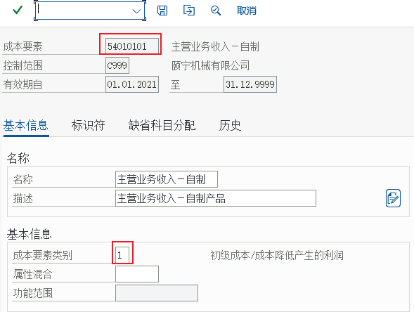
画面 360image365.png · 589×444 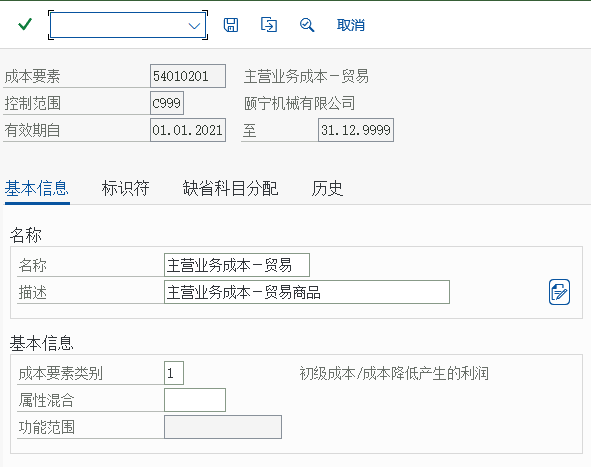
画面 361image366.png · 591×467 
画面 362image367.png · 596×455 -

画面 363image370.png · 592×448 
画面 364image371.png · 587×460 
画面 365image372.png · 584×457 
画面 366image373.png · 588×447 画面 363image370.png · 592×448 画面 364image371.png · 587×460 -

画面 369image376.png · 586×471 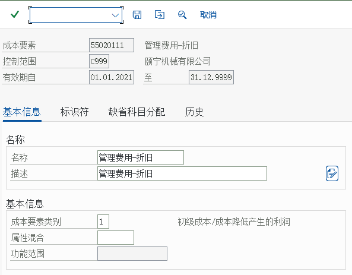
画面 370image377.png · 593×463 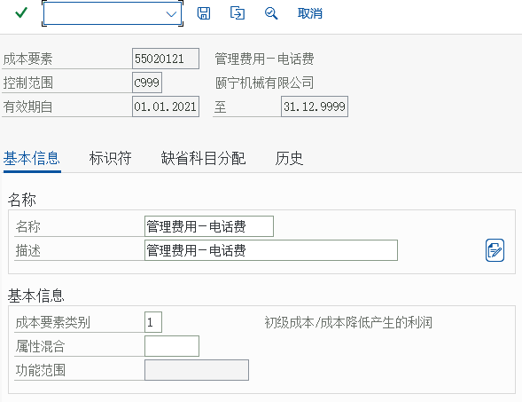
画面 371image378.png · 589×453 
画面 372image379.png · 588×463 画面 369image376.png · 586×471 画面 370image377.png · 593×463 -
前の画面に続けて操作します（画面 375）

画面 375image380.png · 584×450 
画面 376image381.png · 591×462
二次原価要素を作成
KA069 画面 / 5 ステップ原語（中国語）
会计 → 控制 → 成本中心会计 → 主数据 → 成本要素 → 单个处理 → KA06-创建次级成本-
会計－管理会計－原価センタ会計－マスタデータ－原価要素－個別処理－KA06-二次原価要素の登録
原文
会计－控制－成本中心会计－主数据－成本要素－单个处理－KA06-创建次级成本
画面 377image382.png · 310×522 -
前の画面に続けて操作します（画面 378）

画面 378image383.png · 426×323 -
43 は内部作業に関連する原価要素です
原文
43 是和内部作业相关的成本要素
画面 382image387.png · 593×451 -
前の画面に続けて操作します（画面 383）
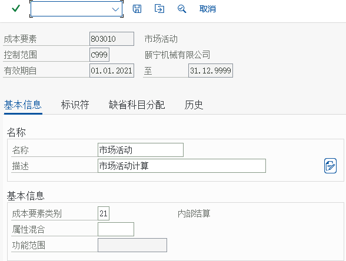
画面 383image388.png · 588×444 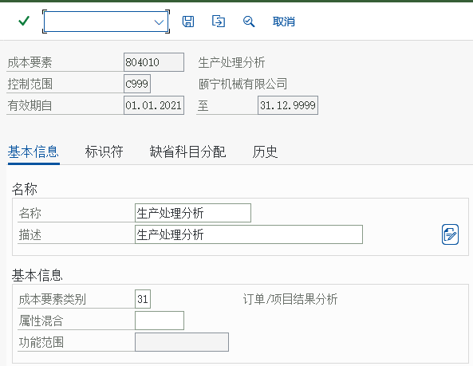
画面 384image389.png · 593×459 
画面 385image390.png · 585×456


{kind=link}
{kind=link}
{kind=link}
{kind=link}
{kind=link}
{kind=link}
{kind=link}
{kind=link}
{kind=link}
{kind=link}
{kind=link}
{kind=link}
{kind=link}
{kind=link}
{kind=link}
{kind=link}
{kind=link}
原価要素グループを新規作成
6 画面 / 4 ステップ原語（中国語）
我们可以将公司的成本要素按层次结构来管理，这种成本要素组可用根据需要定义任意多个会计 → 控制 → 成本要素会计 → 主数据 → 成本要素组 → KAH1 创建-
会社の原価要素は階層構造で管理できます。この原価要素グループは、必要に応じていくつでも定義できます。会計－管理会計－原価要素会計－マスタデータ－原価要素グループ－KAH1 登録
原文
我们可以将公司的成本要素按层次结构来管理，这种成本要素组可用根据需要定义任意多个会计－控制－成本要素会计－主数据－成本要素组－KAH1 创建
画面 386image391.png · 234×437 -
前の画面に続けて操作します（画面 387）
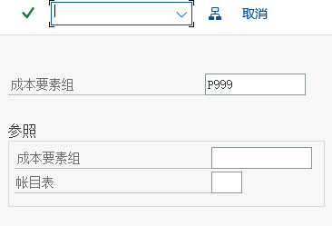
画面 387image392.png · 366×249 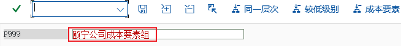
画面 388image393.png · 654×76 -
「下位レベル」をクリック
原文
点击较低层次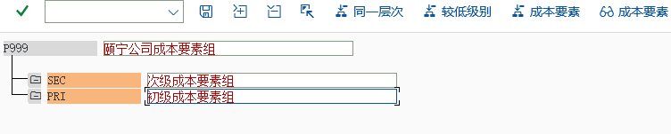
画面 389image394.png · 752×151 -
PRI を選択し、原価要素ボタンをクリックします
原文
选中 PRI 点击成本要素键
画面 390image395.png · 561×646 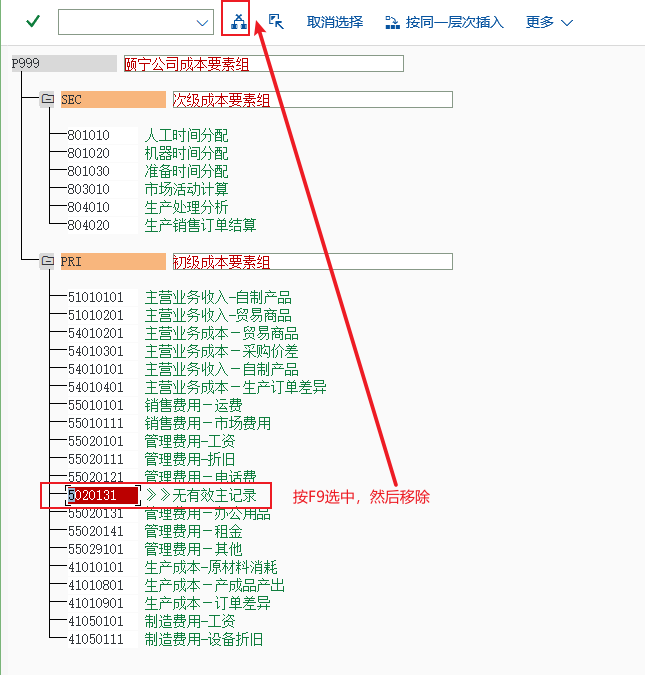
画面 391image396.png · 645×675
{kind=link}
{kind=link}
{kind=link}
{kind=link}
一次原価要素を変更
0 画面 / 0 ステップ原語（中国語）
-

画面 392image398.png · 398×306 
画面 393image399.png · 418×303 
画面 394image400.png · 404×309 
画面 395image401.png · 536×523
作業タイプを新規作成
KL016 画面 / 2 ステップ原語（中国語）
会计 → 控制 → 成本中心会计 → 主数据 → 作业类型 → 单个处理 → KL01-创建-

画面 396image405.png · 304×642 
画面 397image406.png · 873×703 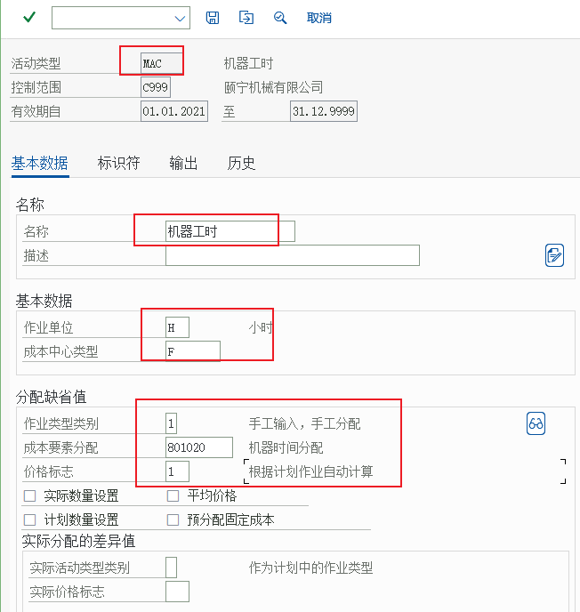
画面 398image407.png · 652×688 画面 396image405.png · 304×642 画面 397image406.png · 873×703 -
会計－管理会計－原価センタ会計－マスタデータ－作業タイプ－個別処理－KL01-登録
原文
会计－控制－成本中心会计－主数据－作业类型－单个处理－KL01-创建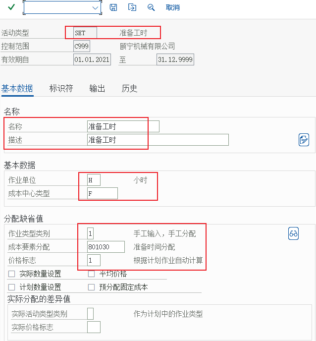
画面 401image408.png · 638×688
{kind=link}
{kind=link}
作業タイプグループを新規作成
3 画面 / 2 ステップ原語（中国語）
会计 → 控制 → 成本中心会计 → 主数据 → 作业类型组 → KLH1-创建-
前の画面に続けて操作します（画面 402）
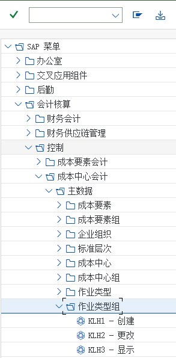
画面 402image409.png · 293×595 
画面 403image410.png · 364×244 -
「作業タイプ」ボタンをクリック
原文
点击作业类型按钮
画面 404image411.png · 738×193
{kind=link}
作業出力価格を設定する
KP267 画面 / 7 ステップ原語（中国語）
会计核算 → 控制 → 成本中心会计 → 计划 → 作业输出/价格 → KP26 → 更改-
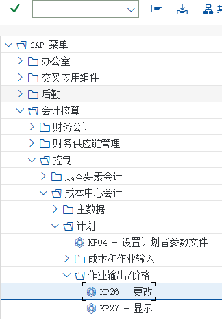
画面 405image412.png · 324×465 -
会計－管理会計－原価センタ会計－計画－作業出力/価格－KP26－変更
原文
会计核算－控制－成本中心会计－计划－作业输出/价格－KP26－更改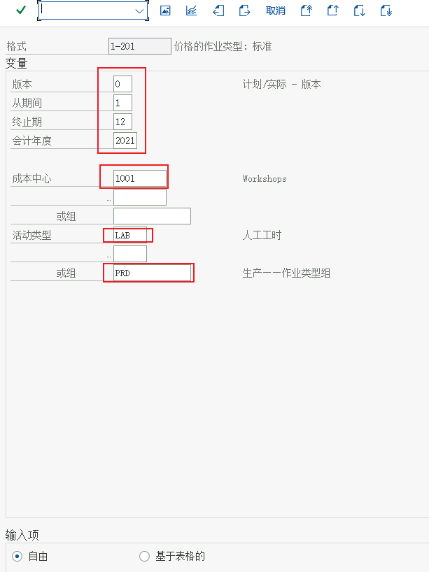
画面 406image413.png · 613×818 -
ツールバーの「概要画面(F5)」をクリックします
原文
点击工具栏上的概览屏幕(F5)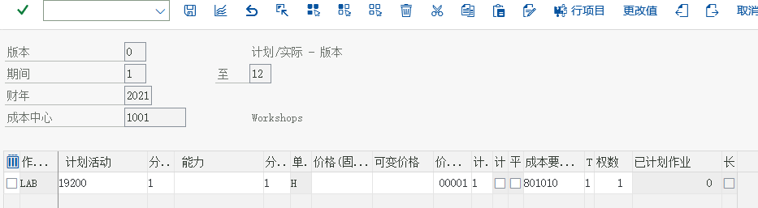
画面 407image414.png · 933×257 -
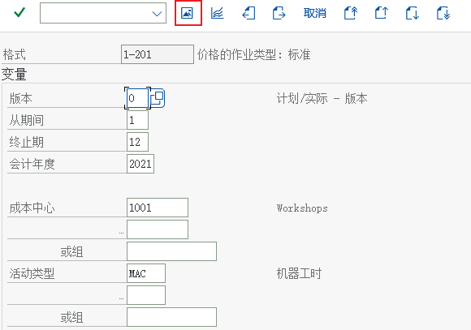
画面 408image415.png · 580×407 -
「保存」をクリックし、次の画面に戻って引き続き機械工数をメンテナンスします
原文
点击保存，回到如下页面，继续维护机器工时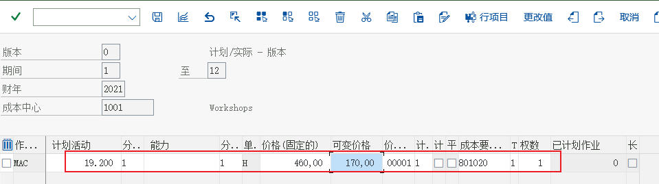
画面 409image416.png · 959×269 -
保存し、戻って SET のメンテナンスを続行
原文
保存，返回继续维护 SET
画面 410image417.png · 590×420 -
前の画面に続けて操作します（画面 411）

画面 411image418.png · 928×257
{kind=link}
{kind=link}
{kind=link}
{kind=link}
{kind=link}
管理会計伝票の番号範囲をメンテナンス
IMG設定（カスタマイズ）6 画面 / 5 ステップ原語（中国語）
控制 → 一般控制 → 组织结构 → 维护成本控制凭证的编号范围-
管理会計－一般管理会計－組織構造－管理会計伝票の番号範囲のメンテナンス
原文
控制－一般控制－组织结构－维护成本控制凭证的编号范围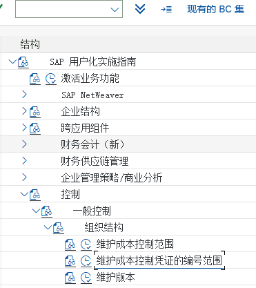
画面 412image419.png · 371×417 
画面 413image420.png · 547×176 -
「コピー」キーをクリック
原文
点击复制键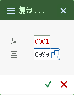
画面 414image421.png · 151×194 -
前の画面に続けて操作します（画面 415）
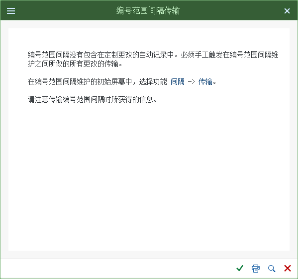
画面 415image422.png · 599×562 -
直接コピーすると、プログラムがコピーできないと表示されるので、グループメニューをクリックし、グループのメンテナンスをクリックします
原文
直接复制，程序显示不能复制，点击组菜单，点击维护组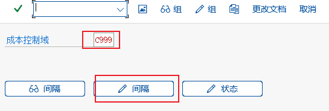
画面 416image423.png · 545×184 -
前の画面に続けて操作します（画面 417）
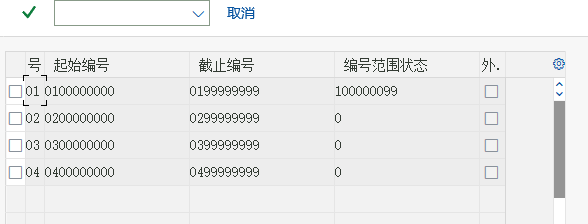
画面 417image424.png · 588×224
{kind=link}
{kind=link}
{kind=link}
{kind=link}
{kind=link}
費用の仕入先請求書を入力
FB603 画面 / 2 ステップ原語（中国語）
| 項目（日本語） | 画面の中国語 | 教材の設定値 |
|---|---|---|
| 仕入先 | 供应商 | 30000001 |
| 総勘定元帳勘定 | 总帐科目 | 55020141 |
| 伝票通貨で表示した金額 | 凭证货币计的金额 | 90000 |
| 原価センタ | 成本中心 | 2001 |
-
解説： 頤寧公司は佳音不動産公司から賃料の請求書を 1 通受け取りました。金額は 90000 で、ここではこの費用を 2001 財務部原価センタに計上する必要があります
原文
解释：颐宁公司收到佳音地产公司房租发票一张，金额为 90000，这里我们需把这笔费用计入 2001 财务部成本中心
画面 418image425.png · 359×413 
画面 419image426.png · 756×761 -
請求書日付 2021 年 3 月 17 日、転記日付 2021 年 3 月 17 日、金額 90000
原文
发票日期 2021年3月17日过帐日期 2021年3月17日金额 90000
画面 420image427.png · 730×308 教材ノート「保存」ボタンをクリックすると、伝票が保存された旨のメッセージが表示されます。
一般費用の請求書を入力
FB504 画面 / 4 ステップ伝票日付 今日 転記日付 今日
総勘定元帳勘定 41050121 D/C 借方
原語（中国語）
凭证日期 今天记帐日期 今天
总帐科目 41050121 D/C 借方
会计 → 财务会计 → 总分类帐 → 过帐 → FB50 输入总帐科目凭证| 項目（日本語） | 画面の中国語 | 教材の設定値 |
|---|---|---|
| 伝票通貨で表示した金額 | 凭证货币计的金额 | 25500 |
| 原価センタ | 成本中心 | 2006 |
| 伝票通貨で表示した金額 | 凭证货币计的金额 | 25500 |
-
解説： 頤寧公司はさらに 25,500 元の電気料金を支払い、この電気料金は 2006 管理部の原価センタに記録されました。ここでは一般的な総勘定元帳伝票の方法でこの伝票を入力します。
原文
解释：颐宁公司又支付了一笔 25500 元的电费，这笔电费被记录到了 2006 行政部成本中心。这里我们用一般的总账凭证的方式输入这张凭证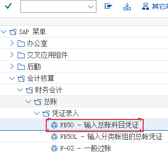
画面 421image428.png · 345×313 教材ノート伝票ヘッダテキスト 11 月電気料金 -
総勘定元帳勘定 10020111 D/C 貸方
原教材のスクリーンショットに誤りがあり、貸方には原価センタを入力できません原文
总帐科目 10020111 D/C 贷方
原书截图有误，贷方不能录入成本中心
画面 422image429.png · 863×478 -
「シミュレーション」をクリックし、「保存」をクリック
原文
点击模拟 点击保存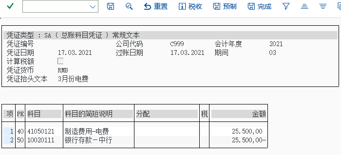
画面 423image430.png · 700×319 -
保存
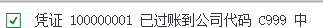
画面 424image431.png · 323×28
{kind=link}
{kind=link}
{kind=link}
原価センタレポートを実行
3 画面 / 2 ステップ原語（中国語）
会计 → 控制 → 成本中心会计 → 信息系统 → 成本中心会计的报表 → 计划/实际比较 → 成本中心：实际/计划/差异| 項目（日本語） | 画面の中国語 | 教材の設定値 |
|---|---|---|
| 管理会計領域 | 成本控制范围 | C999 |
| 会計年度 | 会计年度 | 2006 |
| 開始期間 | 开始期间 | 1 |
| 終了期間 | 终止期间 | 12 |
| 計画バージョン | 计划版本 | 0 |
| 原価センタ値 | 成本中心价值 | 2001 |
| 「目覚まし時計」をクリックして実行するか、押します | 点击闹钟运行或者按 | F8 |
-
会計－管理会計－原価センタ会計－情報システム－原価センタ会計のレポート－計画／実績比較－原価センタ：実績／計画／差異
原文
会计－控制－成本中心会计－信息系统－成本中心会计的报表－计划/实际比较－成本中心：实际/计划/差异
画面 425image432.png · 693×738 -
前の画面に続けて操作します（画面 426）
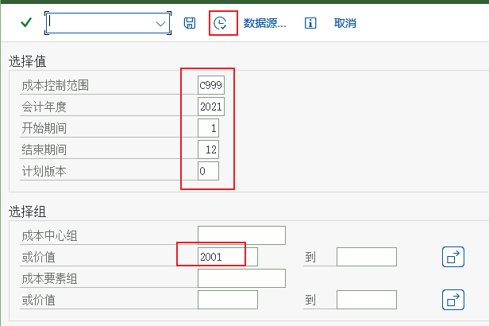
画面 426image433.png · 616×410 
画面 427image434.png · 726×358
{kind=link}
原価センタデータの再転記
KB616 画面 / 5 ステップ原語（中国語）
会计 → 控制 → 成本中心会计 → 实际记账 → 重过账行项目 → KB61 输入-
解説： 90,000 元の賃料が誤って 2001 財務部の原価センタに記録されました。会計伝票を逆仕訳する必要はありません。管理会計で「再転記」を行い、2006 管理部の原価センタに指定し直すだけです。
原文
解释：90000 元的房租被错误的记录到了 2001 财务部成本中心，我们不必冲销财务凭证。只需要在管理会计中做“重过账”重新将其指定到 2006 行政部成本中心
画面 428image435.png · 276×661 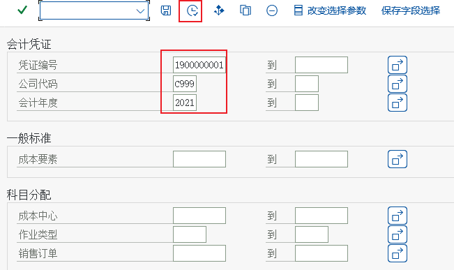
画面 429image436.png · 651×387 -
実行
原文
运行
画面 430image437.png · 851×116 -
この画面で、この費用を 2006 管理部の原価センタに付け替えます。その後、「保存」をクリックします（CTRL+S）
原文
在这个屏幕里，我们将这笔费用重新指定到 2006 行政部成本中心，然后 点击保存CTRL+S
画面 431image438.png · 215×46 -
レポートを再照会
原文
重新查询报表
画面 432image439.png · 1155×334 -
前の画面に続けて操作します（画面 433）
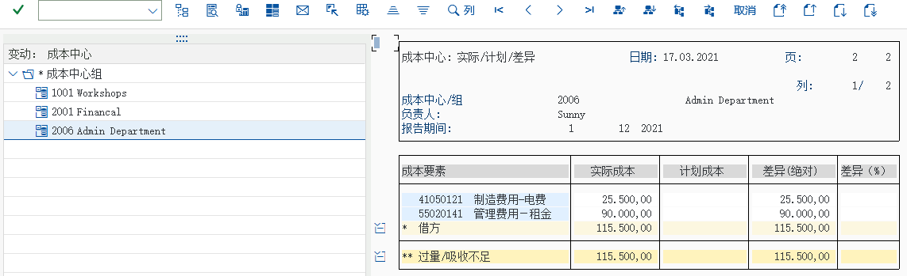
画面 433image440.png · 1142×349 教材ノート原価センタ 2001 の賃料が 2006 に転送されたことがわかります
{kind=link}
{kind=link}
統計キー数値を新規作成
KK015 画面 / 2 ステップ原語（中国語）
会计 → 控制 → 成本中心会计 → 主数据 → 统计指标 → 单个处理 → KK01-创建-
解説： 頤寧公司は、各原価センタの占有面積を使って賃料費用を配賦することにしました。SAP の管理会計では、占有面積のような非財務指標を「統計キー数値」で記録できます。ここでは賃料面積の統計キー数値を 1 つ登録します。
会計－管理会計－原価センタ会計－マスタデータ－統計キー数値－個別処理－KK01-登録原文
解释：颐宁公司决定使用各成本中心占地面积来分配房租费用。在 SAP 管理会计中，类似占地面积等非财务指标,可以用“ 统计指标” 来记录。这里我们建立一个物业租金面积的统计指标。
会计－控制－成本中心会计－主数据－统计指标－单个处理－KK01-创建
画面 434image443.png · 301×284 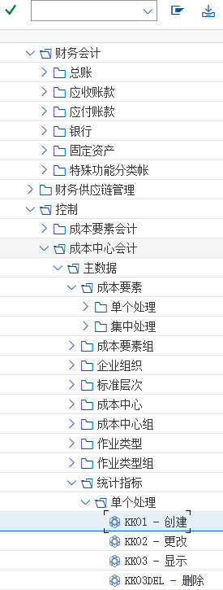
画面 435image444.png · 275×725 画面 434image443.png · 301×284 画面 435image444.png · 275×725 教材ノート次のデータを入力して保存 -
前の画面に続けて操作します（画面 438）
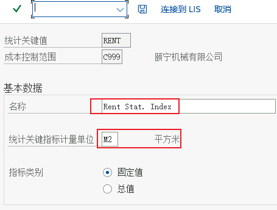
画面 438image445.png · 455×344
{kind=link}
{kind=link}
統計キー数値の数量を入力
KB31N3 画面 / 3 ステップ原語（中国語）
会计 → 控制 → 成本中心会计 → 实际记账 → 统计指标 → KB31N-输入-
会計－管理会計－原価センタ会計－実績記帳－統計キー数値－KB31N-入力
原文
会计－控制－成本中心会计－实际记账－统计指标－KB31N-输入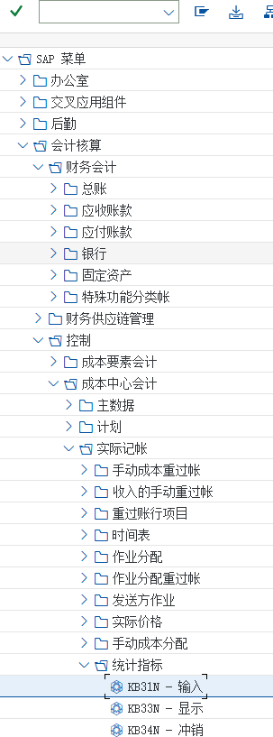
画面 439image446.png · 303×817 -
前の画面に続けて操作します（画面 440）

画面 440image447.png · 913×550 -
保存
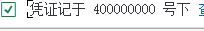
画面 441image448.png · 204×31
{kind=link}
{kind=link}
配賦サイクルを定義
6 画面 / 5 ステップ原語（中国語）
会计 → 控制 → 成本中心会计 → 期末结账 → 当前设置 → 定义分配-
解説： 頤寧公司が定めた賃料費用の配賦ルールは、2006 管理部原価センタに記録されたすべての賃料費用を、本社の各原価センタの占有面積に応じて各原価センタに配賦するというものです。製造部の勤務地はこのオフィス物件の中にないため、賃料費用を負担する必要はありません。ここで、この配賦ルールを SAP 管理会計で定義します。SAP では「配賦サイクル」と呼びます。
原文
解释：颐宁公司确定的分配房租费用的规则是将记录到 2006 行政部成本中心的所有房租费用按照总部各成本中心的占地面积分配给各成本中心。制造部的工作地点不在这个办公物业中，所以不需要承担房租费用。现在我们把这个分配规则定义在 SAP 管理会计中，SAP 称为“分配循环”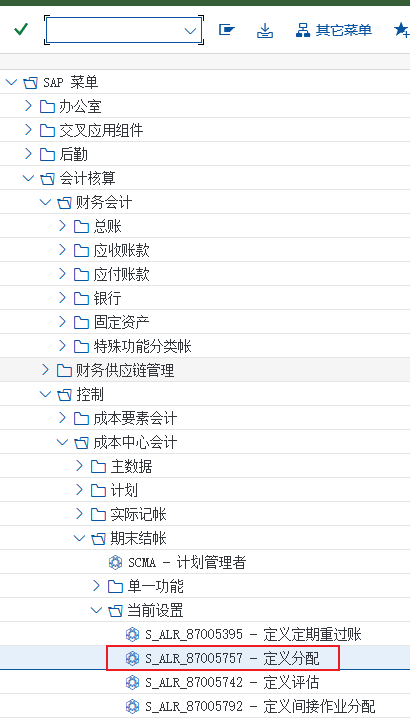
画面 442image449.png · 410×718 
画面 443image450.png · 288×337 -
前の画面に続けて操作します（画面 444）
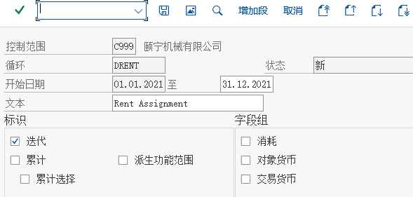
画面 444image451.png · 589×281 -
1 つのサイクルには多数の配賦基準をメンテナンスできます。各配賦基準は「セグメント」と呼ばれます。「セグメント追加」をクリックします
原文
在一个循环里，可以维护很多个分配标准，每个分配标准称为一个“段”，我们点击增加段
画面 445image452.png · 748×464 -
セグメントヘッダでは、いくつかの概要パラメータを定義します。送信側が原価を送信し、受信側が原価を受け取ります。「送信側/受信側」をクリックします
原文
在段表头，我们定义一些概览参数。发送方将成本发送出去，接收方接收成本。点击发送方/接收方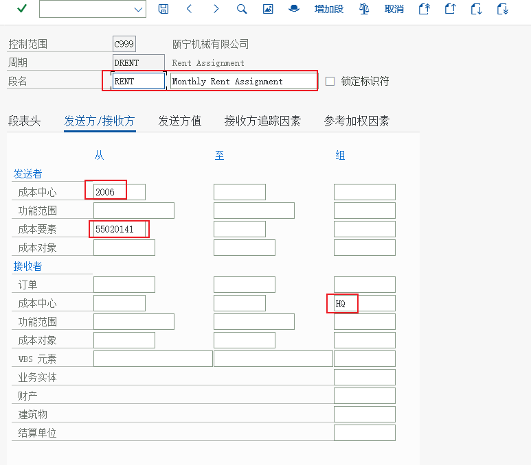
画面 446image453.png · 773×678 原理の説明解説：送信元が原価を送り出し、送信先が原価を受け取ります。したがって、この配賦ルールの送信元は 2006 管理部、原価センタ 55020141 の管理費－賃料の原価要素で、送信先は HQ 本社原価センタグループの各原価センタです。 -
「受入側追跡要因」をクリック
原文
点击接收方追踪因素
画面 447image454.png · 640×466 原理の説明解説：受信側追跡ファクタとは、複数の受信側の間でどのような基準によって原価を配賦するかを指します。したがって、当社のルールは次のとおりです教材ノートRENT 物件賃料面積の統計キー数値の実績統計値で原価を配賦します。
{kind=link}
{kind=link}
{kind=link}
配賦
3 画面 / 2 ステップ原語（中国語）
会计 → 控制 → 成本中心会计 → 期末结账 → 单一功能 → 分配 → KSV5 分配-
解説： 前述の準備作業が完了したので、次に今月の月次締めで、賃料原価を各原価センタに配賦します
会計－管理会計－原価センタ会計－期末決算－単一機能－割当－KSV5 配賦原文
解释：完成了前面的准备工作，接下来要在这个月的月结时，将房租成本分配给了各成本中心
会计－控制－成本中心会计－期末结账－单一功能－分配－KSV5 分配
画面 448image455.png · 386×848 
画面 449image456.png · 456×788 教材ノート期間には当月を入力します（配賦を実行する期間を指します） -
解説： この画面では、配賦を実行する会計期間を入力します。一度に複数の配賦サイクルを実行できるので、それらを下の一覧に入力するだけです。
「実行」をクリック原文
解释：在这个屏幕中，我们填写执行分配的会计期间，我们可以一次运行几个分配循环，只需要将他们填写在下方的清单里即可。
点击运行
画面 450image457.png · 643×333
原価センタに配賦された賃料を照会
4 画面 / 3 ステップ原語（中国語）
会计 → 控制 → 成本中心会计 → 信息系统 → 成本中心会计的报表 → 计划/实际比较 → 成本中心：实际/计划/差异-

画面 451image458.png · 517×583 -
会計－管理会計－原価センタ会計－情報システム－原価センタ会計のレポート－計画／実績比較－原価センタ：実績／計画／差異
原文
会计－控制－成本中心会计－信息系统－成本中心会计的报表－计划/实际比较－成本中心：实际/计划/差异
画面 452image459.png · 591×393 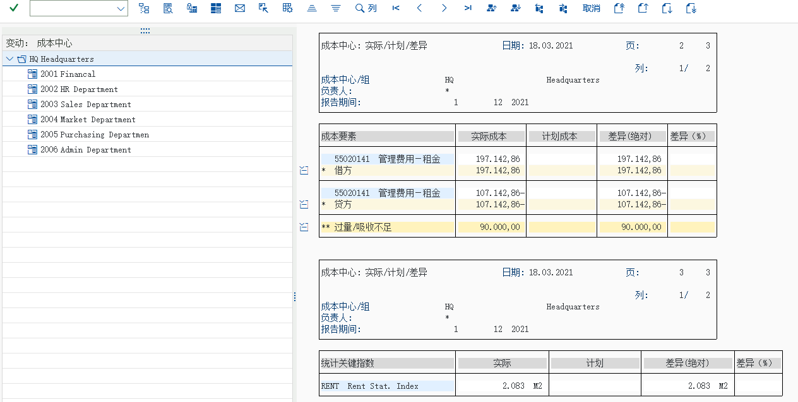
画面 453image460.png · 1264×638 -
左側の各原価センタをクリックすると、各原価センタに配賦された賃料費用を確認できます
原文
点击左边各成本中心，可查看到各成本中心分配到的房租费用
画面 454image461.png · 1259×593
{kind=link}
按分サイクルを定義
8 画面 / 5 ステップ原語（中国語）
会计 → 控制 → 成本中心会计 → 期末结账 → 当前设置 → 定义评估-
この例では、802010 電気料金を二次原価要素として使用し、41050121 電気料金の一次原価要素を按分します。これは、按分によって原価の流れがどのように変化するかを説明するためのものです。この例は実際のシナリオではありません。
会計－管理会計－原価センタ会計－期末決算－現行設定－評価の定義原文
在本例里我们使用802010 电费作为次级成本要素来分摊41050121 电费初级成本要素为了说明在分摊中成本流的形态发生了怎样的变化。本例不是实际的场景
会计－控制－成本中心会计－期末结账－当前设置－定义评估
画面 455image464.png · 388×572 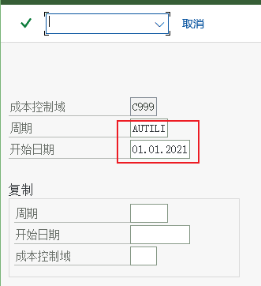
画面 456image465.png · 331×362 画面 455image464.png · 388×572 画面 456image465.png · 331×362 -
解説： 配賦と同様に、まず按分のルールを「按分サイクル」に定義する必要があります。この画面では、按分サイクルにコードを付け、その有効開始日時を指定します。
原文
解释：和分配类似，我们首先需要把分摊的规则定义在“分摊循环”里，在这个屏幕里，我们给分摊循环起一个编码，并说明他的有效开始时间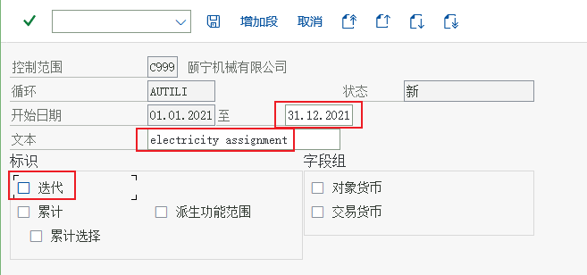
画面 459image466.png · 657×308 -
1 つのサイクルには多数の按分基準をメンテナンスできます。各按分基準は 1 つのセグメントと呼ばれます。「セグメント追加」をクリックします
原文
在一个循环里可以维护很多分摊标准，每个分摊标准称为一个段。点击增加段
画面 460image467.png · 708×519 -
解説： 配賦とは異なり、按分ではコストフローに二次原価要素を使用するため、この画面では関連する二次原価要素を指定する必要があります。ここで示すように固定の按分原価要素を指定する方法と、元の一次原価要素から按分原価要素への対応関係を登録する方法があります。SAP ではこれを配賦構造と呼びます（画面の按分原価要素の下）。また、本例では「固定パーセント」のルールで受入側に原価を按分します。
原文
解释：和分配不同，分摊中成本流转使用的是次级成本要素，所以在这个屏幕里需要指定相关的次级成本要素。我们既可以像现在这样指定一个固定的分摊成本要素，也可以建立一种从原始的初级成本要素到分摊成本要素的对应关系，SAP 称之为分配结构（屏幕中分摊成本要素的下方）此外，本例中我们使用“固定百分比”的规则在接收方中分摊成本。
画面 461image468.png · 605×460 -
送付側は 2006 管理部原価センタの原価要素 41050121、受取側は MFG 製造部原価センタの各原価センタです
原文
发送方是 2006 行政部成本中心的 41050121 成本要素，接收方是 MFG 制造部成本中心的各成本中心
画面 462image469.png · 608×368 教材ノートここでは、1001 と 1002 がそれぞれ占める比率を示しています教材ノート入力が完了したら「保存」をクリック
{kind=link}
{kind=link}
按分
4 画面 / 1 ステップ原語（中国語）
会计 → 控制 → 成本中心会计 → 期末结账 → 单一功能 → 分配 → KSU5-分配-
準備作業が完了したので、この按分サイクルを実行します
原文
完成了准备工作，我们来执行这个分摊循环
画面 463image472.png · 354×811 
画面 464image473.png · 517×787 画面 463image472.png · 354×811 画面 464image473.png · 517×787
「実行」をクリック
1 画面 / 1 ステップ原語（中国語）
-
前の画面に続けて操作します（画面 467）

画面 467image474.png · 704×307
原価センタに按分された電気料金を照会
4 画面 / 2 ステップ原語（中国語）
会计 → 控制 → 成本中心会计 → 信息系统 → 成本中心会计的报表 → 计划/实际比较 → 成本中心：实际/计划/差异-

画面 468image475.png · 617×386 
画面 469image476.png · 478×589 -
会計－管理会計－原価センタ会計－情報システム－原価センタ会計のレポート－計画／実績比較－原価センタ：実績／計画／差異
原文
会计－控制－成本中心会计－信息系统－成本中心会计的报表－计划/实际比较－成本中心：实际/计划/差异
画面 470image477.png · 881×327 
画面 471image478.png · 1002×657 原理の説明注意：ここに表示している 802010 電気料金按分は二次原価要素で、社内の原価の流れに使用されるものであり、財務会計には存在しない勘定です
内部指図タイプを登録し、番号範囲をメンテナンスします
10 画面 / 4 ステップ原語（中国語）
点击新条目点击新条目后台 → 控制 → 内部订单 → 订单主数据 → 定义订单类型-
解説： 頤寧公司は「国内ユーザ大会」を開催します。この販売促進活動のために、会社では多くの費用が発生します。今回の活動の費用は、原価センタの各種費用の中ではなく個別に計算できるようにしたいと考えています。会社には同様の「プロジェクト」が多数あり、SAP の管理会計では「内部指図」でこれらのプロジェクトを管理できます。プロジェクトには、マーケティング系、研究開発系、労働組合活動系などさまざまなタイプがあります。
原文
解释：颐宁公司将要举行 “ 国内用户大会” 为了这次市场推广活动，公司会发生很多费用，我们希望能对这次活动单独核算费用，而不是在成本中心各种费用中。公司中类似的“ 项目”还有很多，在 SAP 管理会计中我们可以用“内部订单”来管理这些项目。项目有各种类型，如市场类的，研发类的，工会活动类的等等。
画面 472image482.png · 512×710 
画面 473image483.png · 405×555 
画面 474image484.png · 625×544 画面 472image482.png · 512×710 画面 473image483.png · 405×555 画面 474image484.png · 625×544 -
前の画面に続けて操作します（画面 478）

画面 478image485.png · 588×722 画面 479image486.png · 565×730 -
保存後、番号範囲インターバルをクリック
原文
保存后，点击编号范围区间
画面 480image487.png · 820×209 -
カーソルで「未配賦」内の PMKT 市場活動を選択してクリックし、次に「市場および広告需要」指図の前のチェックボックスにチェックを入れ、さらにクリックします
原文
将光标选中“未分配的”里的 PMKT 市场活动，点击然后 勾上市场和广告需求。订单前面的方框，再点击
画面 481image488.png · 813×881 教材ノート「保存」をクリック
{kind=link}
内部指図の決済プロファイルをメンテナンス
4 画面 / 4 ステップ原語（中国語）
后台 → 控制 → 内部订单 → 实际过账 → 结算 → 维护结算参数文件-
解説： 「国内ユーザ会議」を開催するために、会社は「キャンペーン」指図タイプを登録しました。その決済プロファイルには、システムに既にある 100 を選択しています。本ステップでは、決済プロファイル 100 の設定を確認します。
原文
解释：为了举行“国内用户大会”公司创建了“市场活动”订单类型，其中结算参数文件选择的是系统中已经有的 100，本步骤中，我们来检查结算参数文件 100 的设置画面 482image490.png · 419×901 -
「決済プロファイルのメンテナンス」をダブルクリック
原文
双击“维护结算参数文件”画面 483image491.png · 641×680 -
前の画面に続けて操作します（画面 484）
画面 484image492.png · 476×317 -
「決済プロファイル 100」をダブルクリックします
ない場合は「新規エントリ」をクリックし、その後で前のステップの決済プロファイルに戻って変更します。そのとき選択したのは 20 です原文
双击“结算参数文件100”，
如果没有，则点击新条目，然后回头修改上一步的参结算参数文件，当时我们选择的为20
画面 485image493.png · 694×646
{kind=link}
{kind=link}
{kind=link}
内部指図決済の配賦構造をメンテナンス
6 画面 / 6 ステップ原語（中国語）
后台 → 控制 → 内部订单 → 实际过账 → 结算 → 维护分配结构-
IMG 設定－管理会計－内部指図－実績転記－決済－配賦構造のメンテナンス
原文
后台－控制－内部订单－实际过账－结算－维护分配结构画面 486image494.png · 354×906 -
前の画面に続けて操作します（画面 487）

画面 487image495.png · 581×236 -
「配賦」をダブルクリック
原文
双击分配
画面 488image496.png · 609×302 -
001 の行を選択し、次に左側のソースファイルをクリックします。001 がない場合は「新規エントリ」をクリックし、左側の「ソース」をダブルクリックします
原文
选中 001 行，然后点击左边的源文件，如果没有001，则点击新的条目，双击左边的“源”
画面 489image497.png · 642×229 教材ノート左側の「決済原価要素」をクリックします -
前の画面に続けて操作します（画面 490）

画面 490image498.png · 786×223 -
「新規エントリ」をクリック
原文
点击新条目画面 491image499.png · 763×245
{kind=link}
{kind=link}
決済伝票の番号範囲をメンテナンス
3 画面 / 2 ステップ原語（中国語）
后台 → 控制 → 内部订单 → 实际过账 → 结算 → 维护结算凭证编号范围-
IMG 設定－管理会計－内部指図－実績転記－決済－決済伝票の番号範囲のメンテナンス
原文
后台－控制－内部订单－实际过账－结算－维护结算凭证编号范围
画面 492image500.png · 523×933 
画面 493image501.png · 800×411 -
解説： 頤寧公司の国内ユーザカンファレンスで発生した費用は、マーケティング活動タイプの内部指図を登録して集計し、その後、各原価センタに決済します。決済が完了すると、対応する決済伝票が生成されます。本ステップでは決済伝票の番号範囲をメンテナンスします。
画面の上方は、すでに番号範囲が割り当てられた原価管理対象です。原価管理対象 C999 はまだ割り当てられていません。未割当欄で C999 を選択し、 をクリックし、標準会計伝票のチェックボックスにチェックを入れ、次に「要素／グループ」ボタン をクリックします。見つからない場合は下図の 01 で代替します。原文
解释：对于 颐宁公司国内用户大会发生的费用，我们将通过创建市场活动类型内部订单来举行归集，然后结算到各个成本中心中去，结算完成时会产生相应的结算凭证。本步骤中我们将对结算凭证维护编号范围。
屏幕上方的是已经分配了号码范围的成本控制对象。成本控制对象 C999 还未分配。在未分配栏中选中 C999，点击 ，在标准会计凭证框内打勾，然后点击元素/组按钮 ，未找到用下图的01代替
画面 494image502.png · 834×123 教材ノート配賦されていることを確認し、「保存」をクリック
内部指図を登録
KO0410 画面 / 7 ステップ原語（中国語）
会计 → 控制 → 内部订单 → 主数据 → KO04-订单管理员-
会計－管理会計－内部指図－マスタデータ－KO04-指図管理担当者
原文
会计－控制－内部订单－主数据－KO04-订单管理员画面 495image503.png · 329×449 -
解説： 市場活動の指図タイプを登録しました。このタイプで内部指図を登録し、国内ユーザ大会で発生した費用を集計します。
原文
解释：我们已经创建了市场活动订单类型，我们将在此类型下创建内部订单来归集国内用户大会发生的费用。
画面 496image504.png · 446×337 -
「新規作成」をクリック
原文
点击新建
画面 497image505.png · 529×167 -
その後「保存」をクリックし、さらに「保存」をクリック
原文
然后点击保存然后点击保存
画面 498image506.png · 868×716 -
「決済ルール」をクリック
原文
点击结算规则
画面 499image507.png · 843×154 
画面 500image508.png · 789×439 -
上記の情報を入力して Enter を押すと、次の結果が得られます：
原文
录入上述信息并回车，得到如下结果：
画面 501image509.png · 738×414 画面 502image510.png · 968×238 -
「変更」ボタンをクリックし、画面右側の制御データをクリックします
原文
点击修改按钮，然后点击屏幕右方的控制数据
画面 503image511.png · 865×338 
画面 504image512.png · 912×532
{kind=link}
{kind=link}
内部指図の費用請求書を入力
FB504 画面 / 4 ステップ原語（中国語）
会计核算 → 财务会计 → 总帐 → 凭证录入 → FB50-输入总账科目凭证-
解説： 会計－財務会計－総勘定元帳－伝票入力－FB50-総勘定元帳勘定伝票の入力
原文
解释：
会计核算－财务会计－总帐－凭证录入－FB50-输入总账科目凭证
画面 505image513.png · 568×310 -
前の画面に続けて操作します（画面 506）

画面 506image514.png · 892×533 -
「シミュレーション」をクリック
原文
点击模拟
画面 507image515.png · 724×339 -
「保存」をクリック
原文
点击保存
画面 508image516.png · 329×27
内部指図の決済
KO883 画面 / 2 ステップ原語（中国語）
控制 → 内部订单 → 单一功能 → 结算 → KO88-单个处理-
解説： 頤寧公司は国内ユーザ会議を開催し、そのために発生した費用を集計する内部指図を登録しました。本ステップでは、指図に集計した費用を各原価センタに決済します。
管理会計－内部指図－単一機能－決済－KO88-個別処理原文
解释：颐宁公司举办了国内用户大会，并为此创建了内部订单来归集发生的费用。本步骤中我们将把订单中归集的费用结算到各个成本中心中去。
控制－内部订单－单一功能－结算－KO88-单个处理
画面 509image517.png · 382×735 -
前の画面に続けて操作します（画面 510）

画面 510image518.png · 610×430 
画面 511image519.png · 835×804 つまずき注意エラーなし、実行が完了しました
内部指図の決済結果を照会する
4 画面 / 3 ステップ原語（中国語）
会计 → 控制 → 成本中心会计 → 信息系统 → 成本中心会计的报表 → 计划/实际比较 → 成本中心：实际/计划/差异-
会計－管理会計－原価センタ会計－情報システム－原価センタ会計のレポート－計画／実績比較－原価センタ：実績／計画／差異
原文
会计－控制－成本中心会计－信息系统－成本中心会计的报表－计划/实际比较－成本中心：实际/计划/差异
画面 512image520.png · 497×589 -
画面 513image521.png · 1152×785 
画面 514image522.png · 595×389 -
各原価センタをクリックしてレポートを表示
原文
点击各成本中心查看报表
画面 515image523.png · 1063×597
{kind=link}
4. スクリーンショットと設定値について
S4.docx の著者が実システムでキャプチャした中国語インターフェースの画面です（元のファイル名 imageNNN.png は各図の図注に残しているので、Word の原文と 1 枚ずつ照合できます）。当サイトはこれらの画面を一切描き直したり、シミュレーションで再現したりしていません。C999、会社名「頤寧機械有限公司」、プラント F999、品目 R999-100/T999-100/F999-100、得意先 K001/K002 など）はすべて原作者の教材環境のものです。手順どおりに作業するときは、操作の順序と設定ポイントはそのまま流用できますが、具体的な番号や名称はご自身のシステムの値に置き換えてください；ドキュメントと異なるメッセージが出た場合は、まず「トラブルシューティングと注意点」ページで原教材ドキュメントに記録された同種の問題を確認してください。